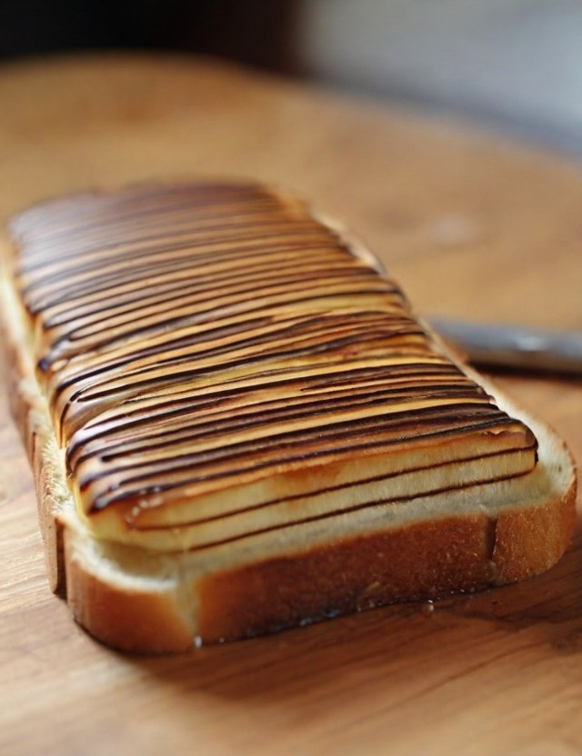
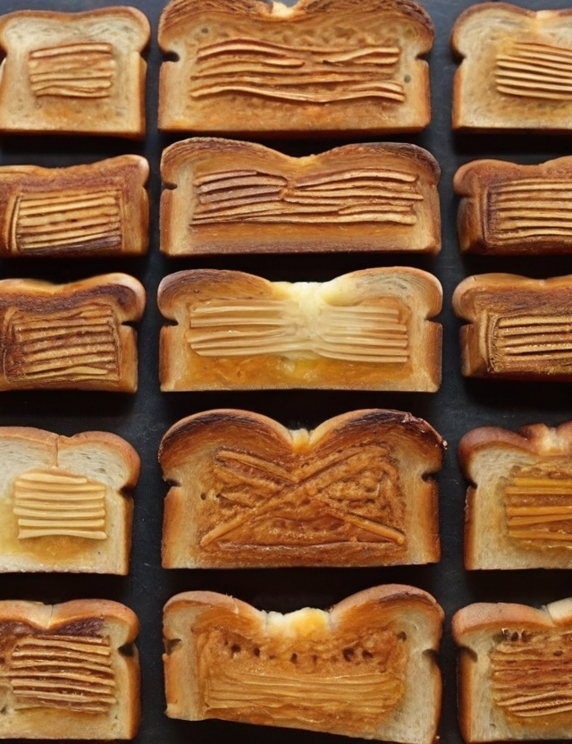
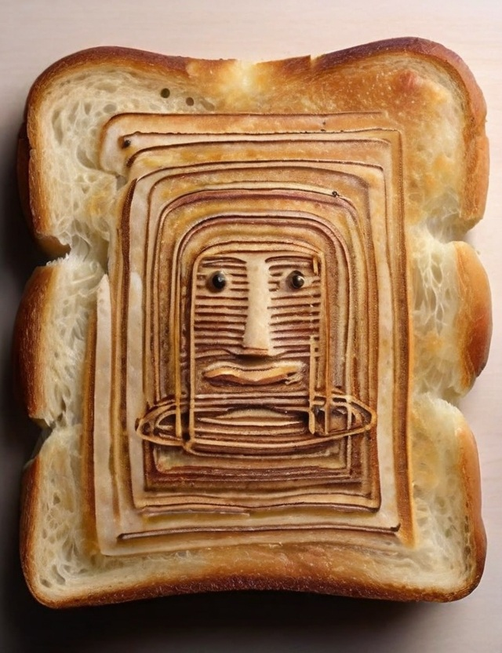

Lignes aléatoires sur pain



Au cœur du quotidien biscornu, les toasts deviennent des pense-bêtes pour les licornes insomniaques. Les confitures récitent des poèmes en langage Morse, confondant les fourchettes déconcertées. Les miettes échafaudent des plans pour un monde parallèle de châteaux de sable comestibles. Pendant ce temps, le beurre est compose des haïkus cryptiques sur les tranches du temps élastique.